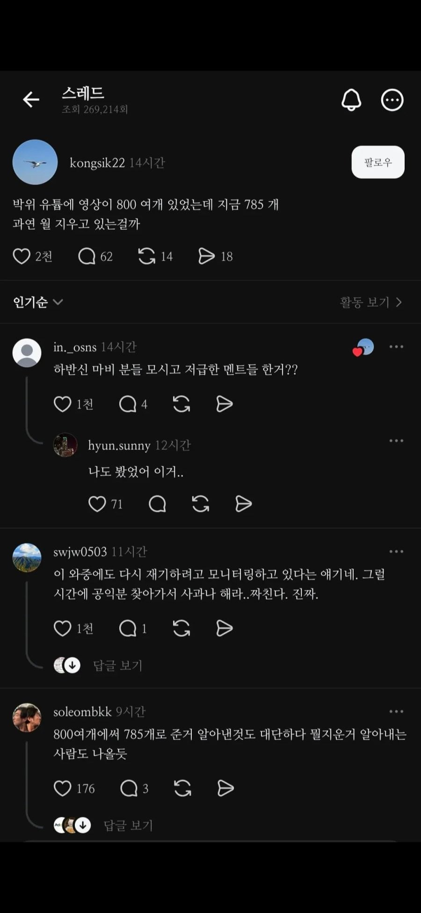

자기가 남들 조리돌림했거나 무시했던 거 나오는 영상들 찾아 지우는 중인가 봄 ㅋㅋㅋ

자기가 남들 조리돌림했거나 무시했던 거 나오는 영상들 찾아 지우는 중인가 봄 ㅋㅋㅋ
로미갤에서 이미 백업 끝마쳤을거 같은데 ㅋㅋㅋㅋ
로미갤이뭐임?
로스트미디어 ㅇㅇ
?????
로미갤은 알고있다
로미갤은 이미 지운거 따로빼서 분석 시작했을듯
이제야 오신 기사님 ㅋㅋㅋㅋㅋㅋㅋ
누가 아카이브 이미 다 땄지 뭐 ㅋㅋㅋ
바기는 본인 행실에 대해 업보 받는거라 동정이 1도 안가지만 결혼식 때 아내분 어머니 오열하는 모습이 생각나 마음이 무겁다 .
송지은 강연하는 거 보니 이제 안타깝지도 않더라
제빌 나락
이야. 지운다는건 뭐가 잘못된지 안다는거야??
뭐 참전용사나 군복무중 낙하산훈련하다가 떨어져서 마비온사람이면 이정도 논란은 사람들도 한번 넘어가줬을거임
근데 술쳐먹고 놀다가 떨어진놈이 뭐가 이렇게 고결한지
사과해도 안받아준놈 업보를 시게 받거라
하지만 이미 실체가 다 까발려져서 늦었죠?
영상 지우면 오히려 누가 저 영상 따로 올리고
숏폼 렉카충들이 퍼다 나르고
커뮤에 퍼지고 악순환임ㅋㅋㅋㅋ
잃어버린 자료가 필요한 자여
로스트 미디어 갤로 와라
800개에서 785개?
그럼 15개의 "로스트미디어"가 생겼다는 말이군
사탄이라면서 왜 지우니.
사탄 해방시키는거?
끝까지 당당하게 사탄 박제해놔야지.
오늘 주일이라고 주님한테 겁나 빌었겠지.